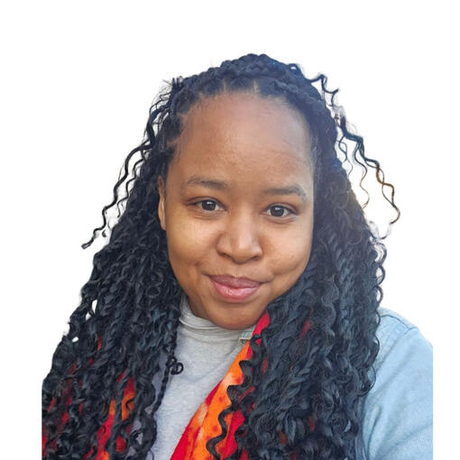

Cloud Engineer — Microsoft Azure
I build and secure Azure infrastructure, as code.
Hands-on experience in cloud migration, infrastructure automation and Kubernetes workloads. Currently preparing AZ-104, based in Geneva and open to roles across Switzerland or remote.
I don't wait for luck — I create it.
About
From on-the-ground IT support to cloud infrastructure

I'm a Cloud Engineer with practical experience in Microsoft Azure, cloud migration and infrastructure automation — skilled in Terraform, Ansible and Kubernetes. My background spans application integration, systems automation and cloud operations across aerospace, luxury retail and healthcare environments before specialising fully in Azure.
I'm particularly interested in application and database migrations, AKS workloads, monitoring, and the continuous improvement of production environments. Since March 2024 I've been working full-time on strengthening my Azure and DevOps skills through hands-on labs and personal projects, while preparing the AZ-104 and AZ-400 certifications.
- Languages — French (native), English (C1), German (B1, working towards B2)
- Nationality — French
- Location — Geneva, Switzerland · open to relocation nationwide or remote work
Skills
Technical proficiency
Cloud & Infrastructure
- Azure VM, App Services, Functions, AKS
- Azure SQL, Storage, Key Vault
- Application Gateway, VPN Gateway
- Azure Monitor, Azure AD
- Office 365, Exchange Online, Intune
Virtualisation & Systems
- Windows Server, Linux
- VMware, Hyper-V
- Active Directory, GPO
Networking & Security
- TCP/IP, DNS, DHCP, VPN, routing
- Firewalls, network isolation
- Identity & access management, hardening
DevOps & Containers
- Docker, Kubernetes, Helm
- CI/CD — Azure DevOps, GitHub Actions
Automation & Scripting
- PowerShell, Bash, Python, Azure CLI
- Infrastructure as Code — Terraform, ARM/Bicep
Methods & Practices
- ITIL, Agile/Scrum
- Incident, problem & change management
- Technical documentation
Certifications
Credentials
AZ-900
Microsoft Azure Fundamentals
AZ-104
Microsoft Azure Administrator
Terraform Associate
HashiCorp Certified
NSE 1–3
Fortinet Network Security
Experience
Where I've worked
Cloud & DevOps Engineer
Training & personal projects
- Building hands-on labs across Azure VMs, networking, AKS, App Services, Terraform and ARM templates
- Practising CI/CD automation via Azure DevOps and GitHub Actions
- Applying security best practices: Azure AD, Key Vault, RBAC, network isolation, monitoring, cost optimisation
- Preparing AZ-104 and AZ-400; AZ-900 completed
Cloud Specialist
Academic work — client: TAG Heuer (1,600 employees), La Chaux-de-Fonds, Switzerland
- Integrated 10+ project environments into Azure production, ensuring compliance with internal standards
- Produced and standardised 15+ architecture and network diagrams
- Implemented Azure Monitor dashboards for 40+ resources, cutting incident detection time by ~25%
- Optimised Azure costs via Pricing Calculator, achieving ~15% projected savings
- Led migration initiatives from on-premises to Azure (Azure Migrate)
System & Automation Engineer
Inetum — client: Thales Alenia Space (27,000+ employees), Toulouse, France
- Resolved complex Level 3 incidents, cutting escalation rates by 30%
- Developed PowerShell automation scripts for application lifecycle operations
- Standardised compliance with aerospace security and availability standards
Application Integrator
Capgemini — client: Dassault Aviation (340,000 employees), Toulouse, France
- Managed end-to-end application integration and post-deployment usability checks
- Implemented automation scripts (Python, Ansible, Terraform, Shell) for provisioning and monitoring
- Mitigated critical incidents under ITIL, improving SLA compliance and reducing MTTR
IT Technician
Oceatech Equipement Healthcare, Toulouse, France
- Provided L1/L2 support for healthcare professionals across software, hardware and medical devices
- Delivered training sessions for healthcare workers across private practices and hospitals
Projects
What I'm building
Secure Azure Landing Zone
A hub-and-spoke network built in Terraform — firewall, RBAC, Key Vault, governance policies and a monitoring dashboard, designed around Azure Administrator (AZ-104) domains.
AKS Platform with CI/CD
A Kubernetes cluster provisioned with Terraform, deployed via a GitHub Actions pipeline, with Ansible-managed patch baselines and an incident runbook.
Case Study: Migrating a Swiss SME to Azure
An end-to-end migration case study — discovery, target architecture, migration plan and Swiss data-residency considerations for a fictional retail company moving off-premises.
Contact